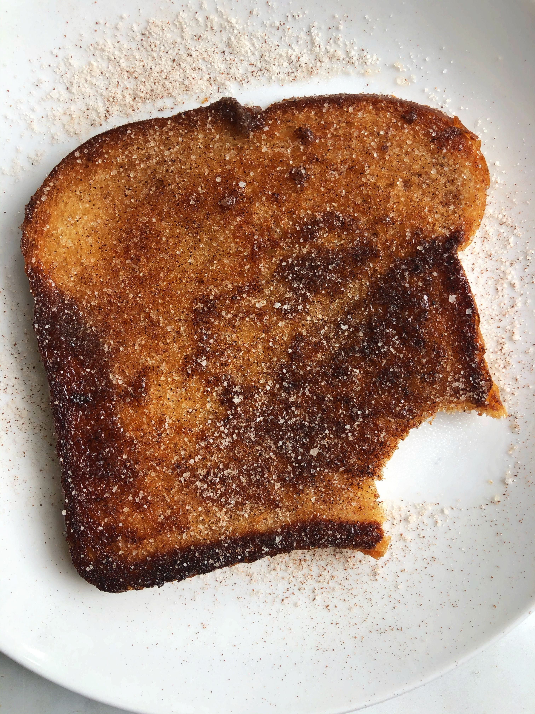

Cinnamon Toast

Description
Cinnamon toast is a delicious snack that is quick and easy to make.
The great thing about cinnamon toast is that the name of the dish effectively doubles as the recipe. If you can make toast, you can make cinnamon toast!
Ingredients
- Sandwich bread
- Butter
- Ground cinnamon
- Granulated sugar
Steps
- Mix equal parts cinnamon and sugar (1 tsp of each should suffice) into a small bowl. If you like, you can mix a larger amount and store in a dedicated shaker for convenient use in the future.
- Using a toaster or toaster oven, toast the bread to a golden brown.
- Quickly remove the bread from the toaster and generously apply butter; we want the heat of the toast to melt the butter.
- Using a spoon (or your shaker if you've prepared one), sprinkle the cinnamon-and-sugar-mixture all over the buttered surface of the toast. The topping should turn a dark brown as it absorbs into the butter.